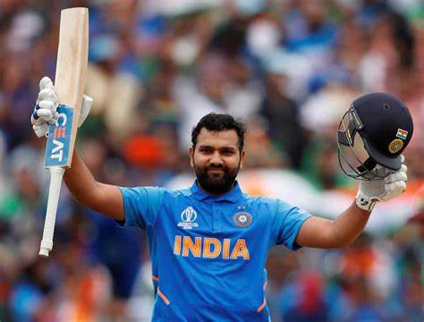
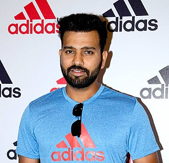

Rohit Gurunath Sharma (born 30 April 1987) is an Indian international cricketer and the current captain of the Indian cricket team. Considered as one of the best opening batters of all time, Rohit is known for his timing, elegance, six-hiting abilities and leadership skills. He plays as a right-handed batsman for India national cricket team in international cricket, Mumbai Indians in IPL and for Mumbai in domestic cricket. Rohit also captains Mumbai Indians and the team has won 5 titles under his leadership, the most by any team.
Rohit Sharma
Indian International Cricketer.

Biography
Rohit Sharma is undoubtedly the cleanest hitter of a cricket ball you will ever see. Nothing can be as pleasing as the sight of the ‘Hitman’ striking the ball over the covers. Rohit Sharma is the current vice-captain of the Indian Cricket Team in the limited-overs.
Once hailed as a ‘talented’ youngster to later ridiculed by the critics for his inconsistency and now becoming an important cog in the Indian batting line up, this Mumbaikar’s journey is nothing short of a movie right there in the making.
Rohit is also the captain of the IPL team Mumbai Indians. Sharma currently holds the record for the highest individual score in One Day Internationals. He scored a record 264 off 173 balls against Srilanka on November 13, 2014. Rohit is also the only player to score two double centuries in One Day Internationals. He is also the only person to score 250+ in ODI innings.
Rohit was born on April 30, 1987, in Maharashtra. He was born to Gurunath Sharma and Purnima Sharma. He speaks fluent Telegu.Rohit’s father was a caretaker of a transport firm storehouse.Rohit Sharma’s mother belongs to Visakhapatnam.He used to live with his grandparents and uncles in Borivali (Mumbai).
Rohit Sharma Wife
Rohit Sharma is married to Ritika Sajdeh. She was born on 21 December 1987 to Bobby Sajdeh and Tina Sajdeh. Her brother Kunal Sajdeh works as a manager at IMG Reliance. After completing her education, Ritika joined her cousin’s company- Cornerstone Sport and Entertainment as a sports manager. Ritika met Rohit Sharma at a Reebok shoot in 2008. Her ‘Rakhi Brother’ Yuvraj Singh, had introduced them to each other. Sharma and Ritika started to date in 2009 after being friends for a while.
"No matter how talented or naturally gifted you are, there’s no substitute for hard work if you have to maintain standards"
–Rohit Sharma